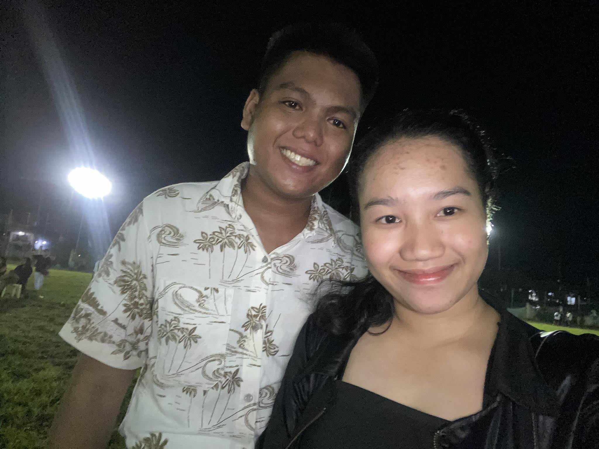

All About Myself
- Ricel Ada S. Villarin
- 20 years old
- November 01, 2003
- Resident in Camagong, Nasipit, Agusan del Norte
I can describe myself as a great, caring ambitious and driven. I’m always looking for an opportunity to do better and achieve greatness, I’m eager to learn new things. I never give up until I get something that is right and I want to have for. I like to be positive always and I like everything I want to do that’s make me happy and satisfied. I like facing my challenges or challenging things that I need to face with.
My Lifestory
The little me. I always love to sing since I was little. In this picture I joined in a singing contest and won as the third placer.
The teenager me. I was very productive and optimistic since then. This picture was taken in my highschool years during teachers day.
The adult me. This picture was taken on new years day. We had a small family-get-together with my family in the beach.
Hobbies
Kdrama have the power to soothe and comfort my heart and let me have an insight into a different culture, and an different way of living. Fantasy, Action, Medicine, History, Law, Thriller etc. what not, they cover up almost all the genres entertaining a wide range of audience. For me, they have always been a stress buster and secret shifter.
I love taking pictures because it gives me a chance to capture a moment in time that I will never experience again. It also allows me to share my memories with others. When I take pictures, I capture the moment's emotions which can last forever.

Music gives soul to the universe, wings to the mind, flight to the imagination, and charm and gaiety to life and to everything. Where words fail, music speaks. Without music, life would be a mistake. I think music in itself is healing.

Dancing is a great way to reduce stress. It provides me an outlet which I can deal with my feelings and anxieties and the happiness hormones, endorphins, that release as a result of dancing contribute towards making me feel better about myself and my life as a whole.
Favorites


Friends
Friends can help you celebrate good times and provide support during bad times. Friends prevent isolation and loneliness and give you a chance to offer needed companionship, too. They can also increase your sense of belonging and purpose. The pictures above are my friends through the years: